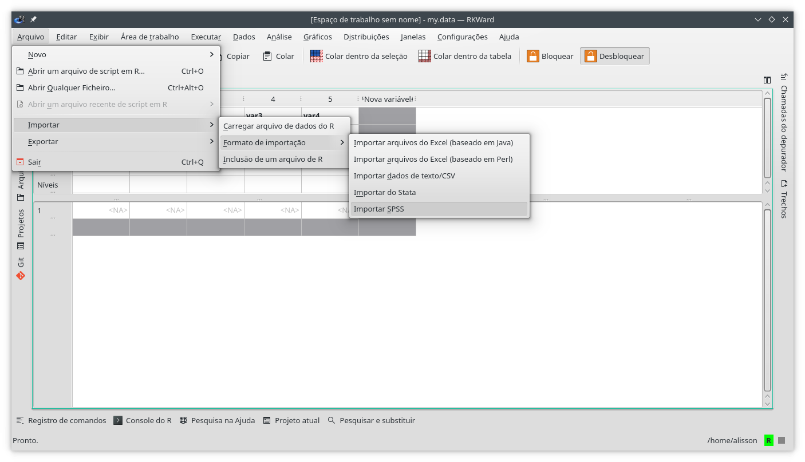

5 Introdução ao R
Objetivos do capítulo:
- Apresentar como obter ajuda no R
- Apresentar os tipos de dados e as estruturas de dados no R
- Apresentar a suíte de pacotes do tidyverse
Supondo que já tenha o R e o RStudio instalados (há diversos tutoriais de instalação no Youtube), vamos aos primeiros passos.
É possível também rodar o R de modo online, de modo gratuito, sem instalar nada em seu computador, com o One Compiler e o Snippets, tendo mais de 19 mil pacotes instalados. O lado negativo é que não é um modo prático e tão rápido como rodar em seu computador, mas pode servir para pequenos testes.
Snippets: um site para rodar R online
Outro modo de rodar o R online é criar uma conta no RStudio Cloud, que possui também modalidade de conta gratuita, com algumas limitações: 15 horas de uso mensais, 1 Gb de Ram (pouco, mas funciona). Vantagem do Rstudio Cloud: a instalação de pacotes ocorre sem maiores problemas. Desvantagem: be mais lento que o RStudio Desktop.
RStudio Cloud: rodando o RStudio nas nuvens através de navegador de internet
HISTÓRIA
A linguagem R foi criada no ano de 1993 por Ross Ihaka e Robert Gentleman do Departamento de Estatística da Universidade de Auckland, da Nova Zelândia, se baseando na linguagem S (por sua vez, criada em 1976). O anúncio oficial de lançamento do R ocorreu em 23 de abril de 1997.
R é uma linguagem aberta e gratuita, mutiplataforma (roda em Linux, Windows e Mac), publicada sob a licença General Public License (GNU). O R é criado por estatísticos e é bem popular no mundo acadêmico. O R vem com diversos pacotes e funções nativamente. Só para ter uma ideia desta quantidade:
| Pacote | Número de funções |
|---|---|
| base | 1244 |
| datasets | 104 |
| graphics | 87 |
| grDevices | 112 |
| methods | 203 |
| utils | 215 |
| stats | 449 |
Dificilmente vamos dominar estes pacotes e mais as funções dos pacotes específicos que iremos instalar
5.1 Obtendo Ajuda no R
A primeira coisa a se aprender é como conseguir ajuda, como conseguir a informação que precisamos. A busca por ajuda é uma constante, mesmo entre os mais experiente.
Obtendo ajuda no RStudio
| Comando | Descrição | Exemplo de uso |
|---|---|---|
help.start() |
para abrir o sistema de ajuda em HTML no seu navegador | help.start() |
help("função") ou ?funcao() |
Acesso à documentação de funções, data sets e outros. No Rstudio, a ajuda é aberta na aba “Help”. Caso rode direto no console, sem o RStudio, uma vez dentro da página de ajuda, digite / para realizar busca e q para sair |
?getwd ou help(getwd) |
help(função, package="NOME_PACOTE") |
para obter ajudar de um pacote que não foi cerregado | help(rlm, package="MASS") Ajuda para a função rlm() do pacote MASS |
help(package = 'NOME_PACOTE') |
Mostra um índice de páginas de ajuda para o pacote | help(package = 'dplyr' |
example() |
Mostra exemplos de uso da função | example(grep) |
help.search() ou ??busca |
Para busca mais vaga. Caso não se lembre do nome exato da função, ou caso busque uma função que faça determinada tarefa | ??regression mostra diversas funções de diversos pacotes que contém a palavra “regression” |
RSiteSearch() |
Busca no seu navegador (browser) um padrão/assunto em sites especializados em R | RSiteSearch("text analysis") |
args() |
Mostra os argumentos que uma função pode receber. | args(grep) |
apropos() |
Busca pelo nome de uma função. Útil quando não lembramos exatamente o nome de uma função | apropos("grep") |
demo() |
Lista todas as demonstrações de todos os seus pacotes | demo() |
demo(package="package-name") |
lista as demonstrações de um pacote particular | demo(package="stats") |
lsf.str("package:nome_do_pacote") |
Mostra as funções do pacote (que precisa já ter sido carregado) | lsf.str("package:dplyr") |
ls("package:nome_do_pacote") |
Mostra os objetos do pacote (que precisa já ter sido carregado) | ls("package:dplyr") |
search() |
Lista os pacotes já carregados | search() |
Fonte: Versão expandida de Getting Help with R.
Uma boa dica de mecanismo de busca (como o Google, Bing, DuckDuckGo, etc.) e que é especializado em R é o https://rseek.org/. Uma outra dica é adicioná-lo como mais uma opção de buscador em seu navegador de internet (ver figura mais abaixo).
Buscador rseek: buscando apenas assuntos relacionados ao R

Adicionando o Rseek como uma opção de buscador no Firefox
# Buscando por funções que contenham "grep"
apropos("grep")
## [1] "agrep" "agrepl" "grep" "grepl" "grepRaw"
# Mostrando os argumentos que uma função pode receber
args(gsub)
## function (pattern, replacement, x, ignore.case = FALSE, perl = FALSE,
## fixed = FALSE, useBytes = FALSE)
## NULLOutra dica é buscar a documentação do pacote no site do cran ou buscar por problemas específicos no o site Stack Overflow.
5.2 R em modo gráfico: RKWard e RCommander
Caso deseje rodar análises estatísticas tradicionais, - não para análise textual - há pelo menos dois modos de rodar o R em modo gráfico (GUI), usando cliques de mouse. Um é através do RKWard que funciona como um SPSS/PSPP, porém, tendo o R como linguagem base. 
A segunda alternativa é o Jamovi, também livre e aberto. Uma terceira alternativa é o Rcmdr ou R Commander. Ao carregar este pacote dentro do R, uma janela aparece onde escolhemos o tipo de operação, e ele mostra o código para tal. O Rcmdr ensina como importar dados (SPSS, Excell, Stata, ruls, etc.), como realizar diversas operações estatísticas, como plotar gráficos.
Ao rodar o Rcmdr pela primeira vez, pacotes adicionais serão instalados, como na imagem abaixo.
Instalação do R Commander. Instalando pacotes adicionais
Após a instalação de pacotes adicionais, O R Commander abre uma janela com os comandos.
R Commander em ação
Caso feche a janela do RCommander, rodar library(Rcmdr) novamente não abrirá a janela, uma vez que o pacote já está carregado.
A solução é rodar então Commander() para ter a janela novamente.
Caso queira fechar este pacote, basta digitar no Console detach("package:Rcmdr", unload=TRUE) ou apenas feche o R.
Para trabalhar com análise textual com estes acima:
- Há um plugin do RCmd para análise textual, o RcmdrPlugin.temis (porém, última atualização em 2018).
- No caso do RKward, o pacote koRpus oferece plugin GUI, com funcionalidades para a língua portuguesa.
Dicas: R Commander
- LAURETTO, Marcelo. Introdução ao R Commander. (Pequeno tutorial do RCommander, em PDF e em português.)
- The R Commander: A Basic-Statistics GUI for R
- FOX, John. Getting Started With the R Commander. (Artigo do criador do RCommander)
- Video tutorial do R Commander em ação e em português: Aprendendo Estatística com o R Commander do Departamento de Estatística UFLA
5.2.1 NVIM-R
Por fim, para os usuários mais avançados quem não tem medo do terminal e gosta de usar o editor Vim ou o Neovim, uma dica é usar o plugin Nvim-R que traz diversas facilidades para usar o Nvim em conjunto com o R. Trata-se de uma alternativa leve e rápida ao Rstudio. (O autor do pacote é um professor brasileiro do departamento de Sociologia da UFC).
5.3 Tipos de Dados no R (data types)
“Tudo que existe no R é um objeto” (John Chambers, apud WICKHAM)
Tipos de dados se referem à forma mais simples de objetos, ou tipos de dados atômicos do R (R atomic data types) Os seis tipos de dados básicos são:
| Tipo de dado no R | Exemplo de uso | |
|---|---|---|
| 1 | character ou “string” (texto) | “a”, “bla”, “Fulano de tal” |
| 2 | numeric (real ou decimal) | -2, 43, 3,333333 |
| 3 | integer (integral) | 3L (O “L” é o modo que o R entende que é um integral) |
| 4 | logical (lógico) | TRUE ou FALSE |
| 5 | complex (complexo) | 1-4i (números complexos com partes reais e imaginárias) |
| 6 | raw (bytes, para arquivos com dados binários) | O raw é de uso raro. > charToRaw('olá') resulta em: 6f 6c c3 a1 |
- Integrais ou “integer” são um tipo de dado sem frações, ou números inteiros, podendo ser positivos ou negativos.
- Tipos reais, ou float são números que possuem fração. Estes nomes tem a ver com o modo com o computador salva esta informação. O float possui tamanho de 4 bytes, e se o número possuir mais de 7 dígitos, o valor é arredondado para 7. Já o “double” possui 8 bytes, o “dobro” do float, podendo chegar a 15 dígitos de acurácia. o que lhe confere maior acurácia, mas também ocupa mais espaço e requer mais processamento computacional. Se quiser saber melhor sobre float e double, veja este artigo “Float vs Double”). Algumas linguagens possuem até o tipo “long double” ou big decimal, que possuem acurácia maior que o double. Portanto, “double” tem recebe este nome pelo modo como é salvo no computador.
Uma vez criados os dados, para examinar as características dos objetos há algumas funções no R
| Função no R para examinar tipos de dados | Descrição | Exemplo |
|---|---|---|
class() |
Que tipo de objeto é? | class(3), class("bla") |
length() |
Qual o tamanho do vetore? Quantos itens possui? | ` | length(c(“bla”,“ble”))` |
attributes() |
Possui metadados? |
# Criando um texto (character). Tem de ser delimitado entre aspas
minha_variavel_texto <- "bla"
minha_variavel_texto
## [1] "bla"
class(minha_variavel_texto)
## [1] "character"
# Criando uma variável numérica. Não pode ser delimitado por aspas.
minha_variavel_numerica <- 2
minha_variavel_numerica
## [1] 2
class(minha_variavel_numerica)
## [1] "numeric"
# Criando um integral:
minha_variavel_integral <- 5L
minha_variavel_integral
## [1] 5
class(minha_variavel_integral)
## [1] "integer"
# Criando um variável lógica. Também sem aspas.
## 5 é maior que 3?
minha_variavel_logica <- 5 > 3
minha_variavel_logica
## [1] TRUE
class(minha_variavel_logica)
## [1] "logical"
## 5 é menor que 3?
minha_variavel_logica2 <- 5 < 3
minha_variavel_logica2
## [1] FALSE
minha_variavel_logica3 <- TRUE # É possível atribuir
minha_variavel_logica3
## [1] TRUE
minha_variavel_logica4 <- F # Também é possível usar abreviaturas "T" e "F"
minha_variavel_logica4
## [1] FALSE
# Criando um número complexo:
numero_complexo <- 3 + 2i
numero_complexo
## [1] 3+2i
class(numero_complexo)
## [1] "complex"
# Convertendo para raw
## convertendo character para raw
meuraw <- charToRaw('teste')
meuraw
## [1] 74 65 73 74 65
class(meuraw)
## [1] "raw"Na criação de tipos de dados, pode-se usar de coerção (coercion) através das funções as.
| Função | Coerção para |
|---|---|
as.numeric |
Numeric |
as.integer |
Integer |
as.double |
Double |
as.character |
Character |
as.logical |
Boolean |
as.raw |
Raw |
EM CONSTRUÇÃO
5.4 Estrutura de dados no R (Data Structures)
EM CONSTRUÇÃO
Vimos os tipos de dados. Estes podem ser organizados de distintos modos, e a depender desta organização, temos diferentes estruturas de dados. O R possui diversas estruturas de dados, como:
- vetores numéricos e atômicos
- lista (list)
- fatores (factors)
- matriz (matrix)
- data frame
5.4.1 Vetor (vector)
Como dito no manual, “Pode-se conceber vetores como células contíguas contendo dados” (Vectors can be thought of as contiguous cells containing data”), ou uma série de valores do mesmo tipo de dado.
Vetor é a estrutura de dados mais comum no R, os tipos básicos de vetores atômicos são aqueles seis mencionados anteriormente.
Criamos vetores com a função c() de “concatenate” ou “combine”.
No caso de strings (character), deve-se colocar os valores dentro de aspas:
meu_vetor <- c("bla", "ble", "bli", "blo", "blu") # criando o vetor com strings
meu_vetor # imprimindo na tela o vetor que acabamos de criar
## [1] "bla" "ble" "bli" "blo" "blu"
class(meu_vetor)
## [1] "character"
length(meu_vetor) # observando quantos itens possui nosso vetor
## [1] 5
meu_vetor[3] # acessando o item do 3 de nosso vetor
## [1] "bli"
# Criando um vetor de valores booleanos
# Não se usa aspas nesse caso
vetor_logico <- c(TRUE, FALSE, FALSE) # criando um vetor de valores booleanos
class(vetor_logico)
## [1] "logical"
# Criando um vetor com diferentes tipo de dados
vetor_pan <- c("bla", 3, TRUE, 5L)
vetor_pan
## [1] "bla" "3" "TRUE" "5"
# criando uma sequência numérica de 2 a 8. Desta vez não iremos salvar em uma variável
c(2:8)
## [1] 2 3 4 5 6 7 8Tanto números simples (ex.: 2.5) como strings (ex.: “Olá mundo R!”) tem comprimento (length) 1. Já, por exemplo, c('Olá', 'mundo', 'R') possui comprimento 3.
length('Olá mundo R')
## [1] 1
length(c('Olá', 'mundo', 'R'))
## [1] 3Vetores podem ser de dois tipos: 1) atômicos, ou 2) listas.
Mas o mais frequênte é encontrarmos “vetor” como sinônimo de “vetor atômico”, e listas serem consideradas como algo à parte.
Para examinarmos os vetores, podemos usar as funções: class(), para saber o tipo, length(), para saber quantos elementos possui e str(), bastante útil ao lidarmo com dataframes, o comando mostra a estrutura básica: quantos elementos, quantas colunas (se houver), uma amostra dos elementos.
Há ainda o comando typeof(), mas recomendamos usar o class() para evitar confusão.
É ainda possível também atribuir nomes aos elementos de um vetor usando a função names()
valores <- c(12, 34, 13) # Criando um vetor
nomes <- c("banana", "uva", "abacate") # Criando vetor com os nomes
names(valores) <- nomes # atribuindo o vetor "nomes" como titulo do vetor "valores"
valores # imprimindo o vetor com nomes e valores
## banana uva abacate
## 12 34 13
names(valores) # imprimindo apenas os nomes
## [1] "banana" "uva" "abacate"
class(valores)
## [1] "numeric"5.4.2 Fator (Factor)
Considere a seguinte tabela fictícia:
| Nome | Altura(cm) | Região do país |
|---|---|---|
| Fulano | 175 | NE |
| Ciclano | 134 | SE |
| Beltrano | 166 | S |
| João | 187 | S |
| Maria | 173 | NE |
| José | 159 | CO |
| Joaquim | 161 | SE |
Se em uma coluna certos valores se repetem, podemos considerá-los como “fatores”. No caso, a coluna “Nome” possui valores únicos, a coluta “Altura” também, mas a coluna “Região” possui uma quantidade limitada de valores que se repetirão: N,S,NO,SE,CO. Podemos então considerar os valores desta coluna como “fatores”. Fatores podem ser tanto strings, como no caso acima, como integrais, como no caso da idade de estudantes de uma mesma turma.
Um exemplo prático:
# Criando um vetor de caracteres com siglas de aeroportos brasileiros
aeroportos <- c("BSB", "CON", "BSB", "VIC", "GUA", "FOR", "MAO","GUA", "CON", "CON", "REC", "UDI", "VIC", "GUA")
table(aeroportos)
## aeroportos
## BSB CON FOR GUA MAO REC UDI VIC
## 2 3 1 3 1 1 1 2
# Se tento criar um barplot com os valores, dá erro:
barplot(table(aeroportos))
# Temos de transformar os dados em um fator, que vamos chamar de "aeroportos.factor"
aeroportos.fator <- factor(aeroportos)
# Perceba que "Levels" mostra os valores sem repetição
aeroportos.fator
## [1] BSB CON BSB VIC GUA FOR MAO GUA CON CON REC UDI VIC GUA
## Levels: BSB CON FOR GUA MAO REC UDI VIC
# Mostrando a frequência de cada termo com a função 'summary()'
summary(aeroportos.fator)
## BSB CON FOR GUA MAO REC UDI VIC
## 2 3 1 3 1 1 1 2
# Agora é possível gerar o gráfico de barras (barplot)
barplot(summary(aeroportos.fator))
Fatores são comuns em tabelas, mas são raros em análise textual. Assim, ao trabalhar com análise textual, convém mudar as opções globais de strings, para não serem consideradas fatores:
options(stringsAsFactors = FALSE)
# ou podemos transformar informações em fatores através do comando
aeroportos.fator <- as.factor(aeroportos)
aeroportos.fator
## [1] BSB CON BSB VIC GUA FOR MAO GUA CON CON REC UDI VIC GUA
## Levels: BSB CON FOR GUA MAO REC UDI VICFator é um tipo de dado usado para campos com valores pré-definidos, valores finitos, como em dados categóricos. Assim, por exemplo, raça, ou status matrimonial contém um número finito de valores (solteira(o), amasiada(o), casada(o), divorciada(o), viúva(o)). No caso dos aeroportos, podemos ver os valores únicos com o comando levels()
levels(aeroportos.fator)
## [1] "BSB" "CON" "FOR" "GUA" "MAO" "REC" "UDI" "VIC"5.4.3 Matriz (Matrix)
Vejamos as matrizes. Podemos pensar em matrizes como tabelas contendo dados do mesmo tipo. Vamos gerar uma matriz para termos contato com uma.
# 1:12=Os elementos da nossa matriz, 1 a 12
# 4=linhas no eixo vertical 3=linhas no eixo horizontal
minha.matriz <- matrix(1:12, 4, 3)
minha.matriz
## [,1] [,2] [,3]
## [1,] 1 5 9
## [2,] 2 6 10
## [3,] 3 7 11
## [4,] 4 8 12
# Acessando itens, linha 2, coluna 3
minha.matriz[2, 3]
## [1] 10
# Acessando uma linha inteira
minha.matriz[2, ]
## [1] 2 6 10Matrizes também são bastante usadas na análise textual, como nas Document-Term-Matrix e nas Term Document Matrix, que são um passo intermediário de diversas análises textuais, como preparação para Topic Modeling, por exemplo. Veremos em mais detalhes posteriormente, mas apenas para um primeiro contato, o DTM Dadas as frases “O rato roeu a roupa do rei”, “O rei riu do rato”, “A roupa do rato é de rei”, consideraremos cada linha como um documento (documento, neste caso, é cada uma das frases). Ao criar uma matriz tipo DTM os documentos são as linhas e as colunas são as palavras e os números são a frequência de cada termo em cada frase:
| rato | rei | riu | roeu | roupa |
|---|---|---|---|---|
| 1 | 1 | 0 | 1 | 1 |
| 1 | 1 | 1 | 0 | 0 |
| 1 | 1 | 0 | 0 | 1 |
Se esta é a primeira vez com estrutura de dados, matriz, o que vimos de matriz pode já ser o suficiente por agora e você poderá pular para a próxima estrutura de dados, a lista. Mais para frente, quando a análise e o pacote necessitarem, você será reencaminhado para esta seção, de como fazer um Document-Term_Matrix (DTM) e um Term-Document-Matrix (TDM).
Os Document-Term-Matrix e o Term-Document-Matrix são usados em análise textual e PLN como passo intermediário para outras análises. Matriz é bem útil ao transformar texto em um formato que o computador consegue entender e processar. Vejamos alguns modos de gerar matrizes com diferentes pacotes.
5.4.4 Gerando um DTM com o pacote TM
library(tm)
frases <- c("O rato roeu a roupa do rei", "O rei riu do rato", "A roupa do rato é de rei")
myCorpus <- data.frame(frases)
corpus <- Corpus(VectorSource(myCorpus$frases))
x <- inspect(DocumentTermMatrix(corpus))
## <<DocumentTermMatrix (documents: 3, terms: 5)>>
## Non-/sparse entries: 10/5
## Sparsity : 33%
## Maximal term length: 5
## Weighting : term frequency (tf)
## Sample :
## Terms
## Docs rato rei riu roeu roupa
## 1 1 1 0 1 1
## 2 1 1 1 0 0
## 3 1 1 0 0 15.4.5 Gerando DTM com o pacote Tidytext
No pacote Tidytext, para gerar o DTM,
1) precisamos tokenizar
usamos a função cast_dtm(coluna_documentos, coluna_termos, contagem_palavras).
Para a contagem de palavras requerida, podemos usar a função count() previamente.
frases <- c("O rato roeu a roupa do rei", "O rei riu do rato", "A roupa do rato é de rei")
frases_df <- dplyr::tibble(id_doc = 1:3,
frases = frases)
# tokenizando o tibble
frasesR <- tidytext::unnest_tokens(frases_df, palavras, frases)
# Criando o DTM
frasesR %>%
# contando termos com 'count', que gera nova coluna 'n'
dplyr::count(palavras, id_doc) %>%
tidytext::cast_dtm(id_doc, palavras, n)
## <<DocumentTermMatrix (documents: 3, terms: 10)>>
## Non-/sparse entries: 19/11
## Sparsity : 37%
## Maximal term length: 5
## Weighting : term frequency (tf)O que nos retorna: - A indicação de que se trata de um Document Term Matrix - A frequência de termos e de documentos -“Non-/sparse entries” refere-se aos não zeros - “sparsity” refere-se à proporção de zeros na matriz: - Caso não exista nenhum zero em nossa matriz, o sparsity será 0%. Por exemplo, quando temos um DTM com apenas um documento. - Tivemos um valor alto de sparsity, mas por que temos poucas frases e bem parecidas - É comum termos valores altos de sparsity como 100%, principalmente quando temos muitos documentos e matrizes bem maiores que esta.
Se quisermos visualizar a matriz, precisamos ampliar nosso código com as.matrix()
frasesR %>%
# contando termos com 'count', que gera nova coluna 'n'
dplyr::count(palavras, id_doc) %>%
tidytext::cast_dtm(id_doc, palavras, n) %>%
as.matrix()
## Terms
## Docs a de do é o rato rei riu roeu roupa
## 1 1 0 1 0 1 1 1 0 1 1
## 3 1 1 1 1 0 1 1 0 0 1
## 2 0 0 1 0 1 1 1 1 0 05.4.6 Listas (list)
Listas (ou “vetores genéricos”) são conjuntos de vetores mais gerais no R.
Podemos colocar tipos diferentes de objetos em uma lista (por exemplo, uma matriz , vetores, dataframes, etc.)
Para criar uma lista, usamos o comando list()
minha_lista = list(c(T,T,F, F, T, T, F), c("Joaquim", "José", "Silva"), c(3,6,3,67,22) )
minha_lista
## [[1]]
## [1] TRUE TRUE FALSE FALSE TRUE TRUE FALSE
##
## [[2]]
## [1] "Joaquim" "José" "Silva"
##
## [[3]]
## [1] 3 6 3 67 22
# Acessando o vetor 3 de nossa lista. No caso de listas, usamos o duplo colchete
minha_lista[[3]]
## [1] 3 6 3 67 22
# Acessando o vetor 2 de nossa lista, item 3
minha_lista[[2]][3]
## [1] "Silva"É possível também “quebrar” um texto em vetores, através do comando strsplt()
texto = "Bla bla bla. Ble ble ble ble. Bli bli. Blo. Blu blu blu"
class(texto)
## [1] "character"
strsplit(texto, "\\.")
## [[1]]
## [1] "Bla bla bla" " Ble ble ble ble" " Bli bli" " Blo"
## [5] " Blu blu blu"No exemplo acima, o primeiro argumento em strplit() é a variável, o segundo argumento é o critério a ser usado para quebrar o texto.
Alguns caracteres são considerados especiais e precisam ser indicados que queremos seu significado literal.
É o caso de ponto final.
Para conseguirmos usá-lo como ponto final, ao invés de usarmos ".", usamos \\. . Note que ficaram espaços no início dos elementos dos vetores.
Podemos melhorar nosso código acrescentando um espaço em branco após o ponto final:
strsplit(texto, "\\. ")
## [[1]]
## [1] "Bla bla bla" "Ble ble ble ble" "Bli bli" "Blo"
## [5] "Blu blu blu"Se examinarmos o tipo de arquivo que temos, veremos que se trata de uma lista:
texto2 <- strsplit(texto, "\\. ")
class(texto2)
## [1] "list"Se quisermos que este seja um vetor simples, e não lista:
class(texto2)
## [1] "list"
# usar o comando unlist()
unlist(texto2)
## [1] "Bla bla bla" "Ble ble ble ble" "Bli bli" "Blo"
## [5] "Blu blu blu"
class(unlist(texto2))
## [1] "character"
# Ou ainda, acessando o item 1 da lista
strsplit(texto, "\\. ")[[1]]
## [1] "Bla bla bla" "Ble ble ble ble" "Bli bli" "Blo"
## [5] "Blu blu blu"É possível fazer uma lista nomeada:
minha.lista <- list(nome1 = c("Joaquim", "José", "Silva"),
letras = letters[1:6],
minha_matriz = matrix(1:8, nrow = 2)
)
# vendo a lista criada
minha.lista
## $nome1
## [1] "Joaquim" "José" "Silva"
##
## $letras
## [1] "a" "b" "c" "d" "e" "f"
##
## $minha_matriz
## [,1] [,2] [,3] [,4]
## [1,] 1 3 5 7
## [2,] 2 4 6 8
# Acessando os itens da lista:
minha.lista[[2]][3]
## [1] "c"
# ou ainda, no caso de lista nomeada
minha.lista$letras[3]
## [1] "c"5.4.7 Data Frames
Uma vantagem de se trabalhar com data frame é que as colunas tem nome e não apenas índice, e isto facilita nosso trabalho na hora de procurar as informações que queremos, pois buscar a coluna pelo seu número pode nos causar confusão. A manipulação de dataframes foi facilitada com os tibbles e os pacotes do tidyverse (ver mais abaixo), mas antes vejamos os dataframes tradicionais.
# Criando 3 vetores com valores aleatórios
idade <- as.integer(c(12,23,35))
genero <- as.character(c("fem", "mas", "fem"))
raça <- as.character(c("pret", "branc", "pard"))
# Jogando estes vetores no nosso dataframe, que vamos nomear de "df"
df <- data.frame(idade, genero, raça)
df # vendo nosso dataframe no console
## idade genero raça
## 1 12 fem pret
## 2 23 mas branc
## 3 35 fem pard
# ver o dataframe em uma nova janela pop-up
View(df)
class(df) # Qual a classe de nosso objeto, caso tenhamos esquecido?
## [1] "data.frame"
names(df) # retornando apenas o nome das colunas
## [1] "idade" "genero" "raça"
# Ver o número de linhas e colunas através do comando
# dim() de "dimensions"
dim(df)
## [1] 3 3
# mostra a estrutura do dataframe, como
# quantidade de linhas (obs.) e colunas (variables)
# nomes das colunas, tipo de dado nesta coluna, primeiros valores
str(df)
## 'data.frame': 3 obs. of 3 variables:
## $ idade : int 12 23 35
## $ genero: chr "fem" "mas" "fem"
## $ raça : chr "pret" "branc" "pard"
df$genero # Filtrando o dataframe "df" pela coluna "genero"
## [1] "fem" "mas" "fem"
df[2] # Filtrando o dataframe pela coluna 2: df[numero]
## genero
## 1 fem
## 2 mas
## 3 fem
df[,2] # Filtrando o dataframe pela coluna 2:
## [1] "fem" "mas" "fem"
# Filtrando o dataframe pelo número da linha: df[número_da_Linha,] .
# Repare na necessidade da vírgula.
df[1,] # imprimindo a linha 1
## idade genero raça
## 1 12 fem pret
df[3,] # imprimindo a linha 3
## idade genero raça
## 3 35 fem pard
df[1:2,] # retornando as linhas de 1 a 2
## idade genero raça
## 1 12 fem pret
## 2 23 mas branc
# Para o caso de excluir as primeiras linhas
# exclui as linhas de 1 a 2
df[-(1:2),]
## idade genero raça
## 3 35 fem pard
# media da coluna "idade"
mean(df$idade)
## [1] 23.33333
summary(df) # Obtendo uma visão estatística ampla da tabela
## idade genero raça
## Min. :12.00 Length:3 Length:3
## 1st Qu.:17.50 Class :character Class :character
## Median :23.00 Mode :character Mode :character
## Mean :23.33
## 3rd Qu.:29.00
## Max. :35.00
summary(df$genero) # sumário da coluna "gênero" do dataset "df"
## Length Class Mode
## 3 character character
summary(df$idade) # sumário da coluna "idade" do dataset "df"
## Min. 1st Qu. Median Mean 3rd Qu. Max.
## 12.00 17.50 23.00 23.33 29.00 35.00
# testando se valores da coluna "genero" são "fem"
df$genero=="fem"
## [1] TRUE FALSE TRUE
# Filtrando apenas as linhas onde a coluna "genero" for "fem".
# Explicando de outro modo: quando "genero" igual a "fem" for verdadeiro, imprima
df[df$genero=="fem",]
## idade genero raça
## 1 12 fem pret
## 3 35 fem pard
# Filtrando apenas as linhas onde a escolaridade for maior que 12.
df[df$idade > 12,]
## idade genero raça
## 2 23 mas branc
## 3 35 fem pardOutro modo de criar dataframe é com a função read.table(), muito usada para carregar tabelas em texto puro
meuDataFrame <- read.table(
# Se header (cabeçalho) = True, então a primeira linha será considerada cabeçalho
header=TRUE,
text='
Letra Valor
A 9
B 14
C 11
D 12')
meuDataFrame
## Letra Valor
## 1 A 9
## 2 B 14
## 3 C 11
## 4 D 12
# Vendo a estrutura do dataframe criado
str(meuDataFrame)
## 'data.frame': 4 obs. of 2 variables:
## $ Letra: chr "A" "B" "C" "D"
## $ Valor: int 9 14 11 125.4.7.1 Manipulando/Editando o data frame
# adicionando (append) nova linha ao data.frame
# Modo1: através do 'nrow'
df[nrow(df)+1,]=c(23, "mas", "branc")
df
## idade genero raça
## 1 12 fem pret
## 2 23 mas branc
## 3 35 fem pard
## 4 23 mas branc
# Modo 2: rbind()
df <- rbind(df, c(20,"fem", "pret"))
df
## idade genero raça
## 1 12 fem pret
## 2 23 mas branc
## 3 35 fem pard
## 4 23 mas branc
## 5 20 fem pret
# mudando um valor, em uma célula
# data.frame[número_da_linha, número_da_coluna] = new_value
df[4,1] = 14
df
## idade genero raça
## 1 12 fem pret
## 2 23 mas branc
## 3 35 fem pard
## 4 14 mas branc
## 5 20 fem pret
# mudando um valor usando o nome da coluna
df[4,"raça"] = "pret"
df
## idade genero raça
## 1 12 fem pret
## 2 23 mas branc
## 3 35 fem pard
## 4 14 mas pret
## 5 20 fem pret
# mudando valores com condicionais
# onde coluna raça for "branc", mudar na coluna "raça" para "branco"
# se o segundo parâmetro não for inserido, todas células ganharão valor "branco"
df[df$raça=="branc", "raça"] = "branco"
df
## idade genero raça
## 1 12 fem pret
## 2 23 mas branco
## 3 35 fem pard
## 4 14 mas pret
## 5 20 fem pret
# deletando linhas
# com base no numero da linha
df[-c(1),] # deleta a linha 1
## idade genero raça
## 2 23 mas branco
## 3 35 fem pard
## 4 14 mas pret
## 5 20 fem pret
df <- df[-c(1),] # para tornar a mudança permanente
# com base no valor
df = df[!df$a=="bla",]5.4.8 Considerações finais sobre estrutura de dados
Estes não são os únicos tipos de estrutura de dados no R.
Alguns pacotes podem criar o seu próprio tipo e não convém tentar cobrir todos.
Apesar de considerar tipos diferentes, podemos considerar os diferentes tipos como subcategorias de outras.
Data frames são um tipo restrito de listas.
Listas, por sua vez, são um tipo de vetor.
Veremos a seguir a suíte de pacotes do tidyverse que possui formato próprio de dados.
5.5 Instalando pacotes no R
No R não carregamos tudo de uma vez, mas carregamos os pacotes ou bibliotecas que vamos usar. Assim salvamos mais memória para o processamento no computador. Um modo de instalar pacotes é via linha de comando
5.6 A suíte de pacotes tidyverse
O tidyverse é uma suíte de pacotes bastante úteis e de uso mais fácil que os pacotes tradicionais do R.
Dicas
O artigo do Hadley Wickham, o criador da ideia, explicando a “filosofia” dos dados “tidy”. > Hadley Wickham. Tidy Data. Journal of Statistical Software
Para instalar a suíte de pacotes tidyverse
install.packages(tidyverse)O tidyverse conta com diversos pacotes e estão sempre aumentando.
library(tidyverse)
# vendo os pacotes disponíveis no tidyverse:
tidyverse_packages()
## [1] "broom" "cli" "crayon" "dbplyr"
## [5] "dplyr" "dtplyr" "forcats" "googledrive"
## [9] "googlesheets4" "ggplot2" "haven" "hms"
## [13] "httr" "jsonlite" "lubridate" "magrittr"
## [17] "modelr" "pillar" "purrr" "readr"
## [21] "readxl" "reprex" "rlang" "rstudioapi"
## [25] "rvest" "stringr" "tibble" "tidyr"
## [29] "xml2" "tidyverse"
O ecossistema tidyverse
Tidyverse ecosystem picture (author: Silvia Canelón, PhD. Original link)

Para nós, destes pacotes, os mais interessantes são:
| Pacote tidyverse | descrição |
|---|---|
| readr | Lê dados retangulares (de tabelas) como csv, tsv e fwf |
| rvest | usado para minerar dados na web de modo fácil |
| tibble | Para trabalharmos com tibble, um tipo de data frame |
| ggplot2 | Famoso pacote de geração de gráficos |
| dplyr | Para manipulação facilitada de dados |
| stringr | Usado na manipução de strings |
| libridate | Para lidar com data e hora de modo fácil |
| purrr | Usado em programação funcional, torna a construção de loops mais limpa e fácil |
| magrittr | Para usar pipes (%>%). Parte dele é carregado ao carregar outros pacotes da suíte |
| forcats | Usado para trabalharmos com fatores, ao lidar com dados categóricos |
5.6.1 Pipes
Quando aplicamos uma série de funções em série, o modo tradicional é de fazê-lo é colocando funções dentro de outras funções, as “nested functions”, por exemplo:
função3(função2(função1)))
Representação metafórica de funções dentro de outras funções
Repare que a ordem das funções é invertida, o que pode tornar bem trabalhosa a tarefa de descobrir a ordem das funções.
Mas podemos fazer o mesmo de um modo mais fácil e bem mais inteligível, usando pipes do pacote magritrr do tidyverse. Para carregá-lo, basta carregar qualquer um dos pacotes do tidyverse, como stringr ou dplyr.
Com ele, ao invés das funções dentro de funções do exemplo anterior, é possível ordenar os comandos intercalados com pipes de um modo mais intuitivo
função1() %>% função2() %>% função3()
Caso não haja parâmetros dentro dos parênteses, pode-se retirar os parênteses.
função1 %>% função2 %>% função3
Caso, a função exija mais de um parâmetro, deve-se indicar o local onde o nome do dataframe/vetor, etc com um ponto final.
função1() %>% função2(., parametroQualquer = ValorDoParametroQualquer)
ou se a função for diferente (ao olhar os argumentos da função, o x diz onde o ponto de ir)
função1() %>% função3(parametroQualquer, OutroParametroQualquer, .)
Há ainda outros pipes, mas neste caso, o pacote magrittr deve ser carregado explicitamente.
como o %$%. data.frame %$% coluna que equivale a data.frame$coluna.
Em maio de 2021 foi introduzido no R versão 4.1.0 um novo pipe, nativo, vindo por padrão no R, o |>, que tem suas peculiaridades. Talvez o mais prudente é aguardar um pouco mais para usá-lo. Até lá, indica-se usar o pipe do tidyverse.
5.6.2 Tibbles
O “Tibble” é um modo de chamar objetos da classe “tbl_df”, um tipo de dataframe, mas que possui algumas vantagens. O tibble, ao ser chamado, mostra apenas as 10 primeiras linhas, ao invés do dataframe inteiro, o que é bem útil quando temos tabelas que não sejam minúsculas. O Tibble, ao contrário do dataframe, também mostra os tipos de dados das variáveis, e tenta se adequar ao tamanho da tela. Além disso, um tibble não força caracteres para fatores, que é o modo como lidamos com strings ao fazermos a análise textual. O video “Qual a diferença entre dataframe e tibble?” do canal de Samuel Macedo explica as diferenças entre estes dois tipos.
Vamos criar um tibble com os dados que usamos no exemplo anterior do dataframe.
# criando vetores com valores
idade <- as.integer(c(12,23,35, 22, 73))
genero <- as.character(c("fem", "mas", "fem", "fem", "mas"))
raca <- as.character(c("preto", "branco", "pardo", "pardo", "branco"))
# cria-se tibble com a função 'tibble()' a partir dos vetores anteriores
MeuTibble <- dplyr::tibble(idade,
# Não esqueça de colocar vírgula ao final destas linhas
genero,
# a ultima liha não leva vírgula
raca)
MeuTibble
## # A tibble: 5 × 3
## idade genero raca
## <int> <chr> <chr>
## 1 12 fem preto
## 2 23 mas branco
## 3 35 fem pardo
## 4 22 fem pardo
## 5 73 mas branco
# mostrando apenas uma colunar}
MeuTibble$genero
## [1] "fem" "mas" "fem" "fem" "mas"Também é possível alterar o nome da coluna/variável ao criar o tibble, usando o formato nome_da_coluna_no_tibble = nome_da_variável,
MeuTibble2 <- dplyr::tibble(idade_amostra = idade,
genero_amostra = genero,
raca_amostra = raca)
MeuTibble2
## # A tibble: 5 × 3
## idade_amostra genero_amostra raca_amostra
## <int> <chr> <chr>
## 1 12 fem preto
## 2 23 mas branco
## 3 35 fem pardo
## 4 22 fem pardo
## 5 73 mas branco5.6.3 Dplyr: Verbos (ou comandos)
O pacote Dplyr possui vários “verbos” ou comandos, para manipulação de dados:
- Manipulando linhas:
filter()filtra linhas com base nos valores das colunas.slice()escolhe linhas com base na localização.arrange()reordena as linhas com base na ordem de uma ou mais colunas. Pode ser combinada comdesc()para inverter a ordem. Por exemplo, em um dataframe, podemos reordená-la com bbase na ordem alfabética dos nomes, ou das datas ou de alguma outra coluna.
- Colunas:
select()seleciona/filtra variáveis/colunas. Para inverter a seleção, usarselect(!Variavel)rename()muda o nome das colunas.mutate()muda os valores de colunas e pode também criar novas colunas (útil para criar nova coluna com base em uma já existente).relocate()muda a ordem das colunas.
- Grupo de linhas:
summarise()colapsa um grupo de linhas em uma linha única, sendo combinada com outros comandosgroup_by()junta linhas de mesmo valor (bom para usar com fatores). Deve ser usado em conjunto com outros comandos. (Esta é uma função genérica, isto é, provê implementação de outros pacotes)
Fonte: Baseado parcialmente em Introduction to dplyr.
Vejamos exemplos destes comandos.
library(dplyr) # carregando o pacote caso não tenha sido carregado
##
## Attaching package: 'dplyr'
## The following objects are masked from 'package:stats':
##
## filter, lag
## The following objects are masked from 'package:base':
##
## intersect, setdiff, setequal, union5.6.3.0.1 dplyr::filter()
Usamos o verbo filter para filtrar linhas com certos valores específicos
# Filtrando um valor específico de uma coluna
MeuTibble %>%
filter(genero == "fem")
## # A tibble: 3 × 3
## idade genero raca
## <int> <chr> <chr>
## 1 12 fem preto
## 2 35 fem pardo
## 3 22 fem pardo
# Filtrando por valores de duas colunas
MeuTibble %>%
filter(genero == "fem" & raca == "pardo")
## # A tibble: 2 × 3
## idade genero raca
## <int> <chr> <chr>
## 1 35 fem pardo
## 2 22 fem pardo
# Filtrando com termo aproximado
# para tal, combinamos filter com grepl
MeuTibble %>%
filter(grepl("p.*", raca))
## # A tibble: 3 × 3
## idade genero raca
## <int> <chr> <chr>
## 1 12 fem preto
## 2 35 fem pardo
## 3 22 fem pardo5.6.3.0.2 dplyr::arrange()
# ordenando por valores da coluna "idade"
arrange(MeuTibble, idade)
## # A tibble: 5 × 3
## idade genero raca
## <int> <chr> <chr>
## 1 12 fem preto
## 2 22 fem pardo
## 3 23 mas branco
## 4 35 fem pardo
## 5 73 mas branco
# Invertendo a ordenção
MeuTibble %>% arrange(desc(idade))
## # A tibble: 5 × 3
## idade genero raca
## <int> <chr> <chr>
## 1 73 mas branco
## 2 35 fem pardo
## 3 23 mas branco
## 4 22 fem pardo
## 5 12 fem preto5.6.3.0.3 dplyr::select()
Restringindo as colunas/variáveis.
MeuTibble %>%
select(genero)
## # A tibble: 5 × 1
## genero
## <chr>
## 1 fem
## 2 mas
## 3 fem
## 4 fem
## 5 mas
# todas colunas, exceto a genero
MeuTibble %>%
select(!genero)
## # A tibble: 5 × 2
## idade raca
## <int> <chr>
## 1 12 preto
## 2 23 branco
## 3 35 pardo
## 4 22 pardo
## 5 73 branco
# Selecionando a coluna pelo índice, e não pelo nome
select(MeuTibble,1)
## # A tibble: 5 × 1
## idade
## <int>
## 1 12
## 2 23
## 3 35
## 4 22
## 5 735.6.3.0.4 dplyr::rename()
É posível renomear variáveis/colunas com o comando rename, que em o seguinte formato:
rename(novo_nome = nome_antigos)
MeuTibble %>%
dplyr::rename(genero_bin = genero)
## # A tibble: 5 × 3
## idade genero_bin raca
## <int> <chr> <chr>
## 1 12 fem preto
## 2 23 mas branco
## 3 35 fem pardo
## 4 22 fem pardo
## 5 73 mas branco5.6.3.0.5 dplyr::mutate()
mutate(NomeVariavel = função()) modifica e cria novas colunas/variáveis. Pode ser usado em conjunto com outros cálculos
# criando variável expectativa de vida
expectativa_vida = 70
MeuTibble %>%
select(genero, idade) %>%
# vamos ver quantos anos faltam para cada idade atingir a
# expectativa de vida da região
mutate(AnosParaExpecVida = expectativa_vida - idade)
## # A tibble: 5 × 3
## genero idade AnosParaExpecVida
## <chr> <int> <dbl>
## 1 fem 12 58
## 2 mas 23 47
## 3 fem 35 35
## 4 fem 22 48
## 5 mas 73 -35.6.3.0.6 dplyr::summarise()
A função summarise() ou summarize() (com “s” ou “z”, ambas funcionam), cria um novo data frame. Pode ser usado com funções como mean(), median(), ou para contar dados categóricos, dentre outras funções.
Sua sintaxe é summarize(nome_nova_variavel = funcao)
# verificando a média de idade
MeuTibble %>%
summarise(mean(idade))
## # A tibble: 1 × 1
## `mean(idade)`
## <dbl>
## 1 335.6.3.0.7 dplyr::group_by()
O comando summarise se torna mais útil em conjunto com o comando group_by().
# Media de idade por genero
MeuTibble %>%
group_by(genero) %>%
summarise(media = mean(idade))
## # A tibble: 2 × 2
## genero media
## <chr> <dbl>
## 1 fem 23
## 2 mas 48Podemos usar o summarize também para contar dados categóricos, junto à função n() e ao group_by().
Por exemplo, vamos contar os itens na coluna “genero”
MeuTibble %>%
group_by(genero) %>%
summarise(novo_nome_da_variável = n())
## # A tibble: 2 × 2
## genero novo_nome_da_variável
## <chr> <int>
## 1 fem 3
## 2 mas 2Um modo ainda mais simples de contar dados categóricos, é usando a função count().
A contagem aparece em uma nova coluna de nome “n”
MeuTibble %>%
count(genero)
## # A tibble: 2 × 2
## genero n
## <chr> <int>
## 1 fem 3
## 2 mas 2Caso prefira usar o índice da coluna ao invés de seu nome, use group_by_at(numero_da_coluna).
Pode-se ainda acrescentar novas linhas ou juntar tibbles através dos comandos:
| comando | descrição |
|---|---|
bind_rows() |
junta dois tibbles, permitindo linhas duplicadas |
union(df1,df2) |
Junta tibbles df1 e df2, mas acrescenta sem repetição. |
Pode-se retirar linhas com anti_join(). Este comando pode ser útil para retirar stopwords anti_join(stop_words)
Dicas: Tibble
Uma boa introdução aos tibbles (em inglês) temos no capítulo 10.Tibbles do livro “R for Data Science” de Wichham e Grolemund.
5.7 Manipulando data e hora
Data e hora é algo simples, mas que pode dar dor de cabeça se não usar os pacotes já prontos.
O R usa o seguinte formato "ano-mês-dia hora:minuto:segundo" ou, por exemplo, 2021-03-09 13:05:03.
O mês vem antes de dia e ano vem antes de todos já que assim é possível organizar as datas facilmente usando a ordem alfabética/numérica.
P.s: Cuidado!
Para evitar confusão, não use data como nome para um objeto, já que data tem significado especial no R.
Existe um padrão para datas usado em várias linguagens.
Por exemplo, %d equivale a dia, %m equivale a mês em formato numérico, %b em formato por extenso.
Para consultar a lista com este formato, consulte a ajuda ?strptime. Mas vale lembrar, esta conversão ficou mais fácil com o pacote lubridate, que veremos mais abaixo.
# Dizendo ao R que nossa string "12/05/1993 13:00:05" é uma data
minha_data = "12/05/1993 13:00:05"
minha_data2 = strptime(minha_data, format = "%d/%m/%Y %H:%M:%S")
minha_data2
## [1] "1993-05-12 13:00:05 -03"5.7.1 Gerando uma sequencia de datas no R
Em algum momento você pode precisar de uma sequência de datas, por exemplo, ao fazer a raspagem de dados de algum site que usa o formato de data (como é o caso de agendas de autoridades governamentais). Isto é bem fácil com o R. Vamos gerar datas entre “29 de novembro de 2020 (”2020-11-29”) e 02 de janeiro de 2021 (“2021-01-02”).
seq(from=as.Date("2020-11-29"), to=as.Date("2021-01-02"), by="day")
## [1] "2020-11-29" "2020-11-30" "2020-12-01" "2020-12-02" "2020-12-03"
## [6] "2020-12-04" "2020-12-05" "2020-12-06" "2020-12-07" "2020-12-08"
## [11] "2020-12-09" "2020-12-10" "2020-12-11" "2020-12-12" "2020-12-13"
## [16] "2020-12-14" "2020-12-15" "2020-12-16" "2020-12-17" "2020-12-18"
## [21] "2020-12-19" "2020-12-20" "2020-12-21" "2020-12-22" "2020-12-23"
## [26] "2020-12-24" "2020-12-25" "2020-12-26" "2020-12-27" "2020-12-28"
## [31] "2020-12-29" "2020-12-30" "2020-12-31" "2021-01-01" "2021-01-02"O parâmetro by aceita ainda week e month.
O R também calcula anos bissextos.
Fazendo um teste, gerando datas entre 28 de fevereiro e 1 de março de diferentes anos:
# criando uma função para testes
FevMarc <- function(ano) { # nome_da_funcao <- function(input){
minhaDataInicial=paste0(ano, "-02-28")
MinhaDataFinal=paste0(ano, "-03-01")
seq(from=as.Date(minhaDataInicial), to=as.Date(MinhaDataFinal), by="day")
}
for ( ano in c(2015:2021) ) {
x= FevMarc(ano)
print(x)
}
## [1] "2015-02-28" "2015-03-01"
## [1] "2016-02-28" "2016-02-29" "2016-03-01"
## [1] "2017-02-28" "2017-03-01"
## [1] "2018-02-28" "2018-03-01"
## [1] "2019-02-28" "2019-03-01"
## [1] "2020-02-28" "2020-02-29" "2020-03-01"
## [1] "2021-02-28" "2021-03-01"5.7.2 Lubridate: facilitando manipulação de datas
Com o Lubridate é mais fácil manipular data e hora, ou mesmo alterar fuso horário. No caso abaixo, não precisamos especificar o caractere separador, apenasa ordem. No caso abaixo, dia/mês/ano
minha_data <- "12/05/2020"
lubridate::dmy(minha_data)
## [1] "2020-05-12"5.7.3 Converter data em nome por extenso do mês
Dado um vetor de meses, podemos gerar o mês não como número, mas com seu nome.
vetor_meses = c(1,4,7,3,2,12,6)
library(lubridate) # carregando o pacote lubridate
##
## Attaching package: 'lubridate'
## The following objects are masked from 'package:base':
##
## date, intersect, setdiff, union
# o locale pode ser que funcione com o valor 'pt_BR'
Meses <- month(as.numeric(vetor_meses),
label = TRUE, # produz os meses
locale = "pt_BR.utf8") # lingua
Meses
## [1] jan abr jul mar fev dez jun
## 12 Levels: jan < fev < mar < abr < mai < jun < jul < ago < set < ... < dez
# De modo resumido
lubridate::month(as.numeric(vetor_meses), label = TRUE, locale = "pt_BR.utf8")
## [1] jan abr jul mar fev dez jun
## 12 Levels: jan < fev < mar < abr < mai < jun < jul < ago < set < ... < dezFazendo o caminho inverso, supondo que tenhamos um vetor com nome dos meses e queiramos colocá-los em formato data
dataPorExtenso <- c('12 agosto 2020',
'17 dezembro 2021')
as.Date(dataPorExtenso, format = "%d %B %Y")
## [1] "2020-08-12" "2021-12-17"